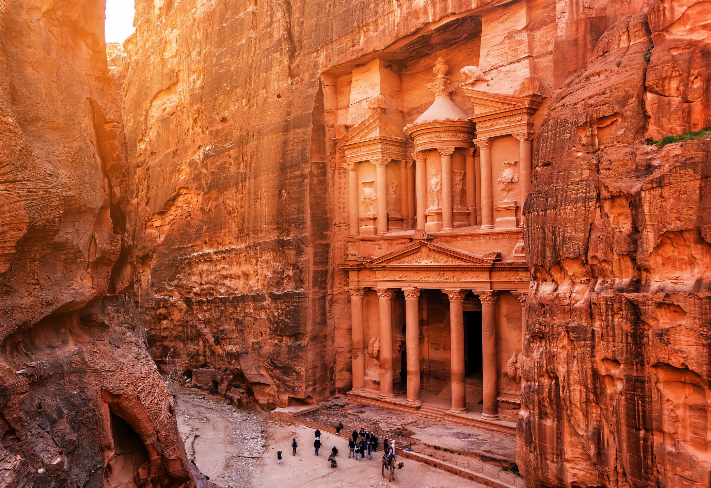
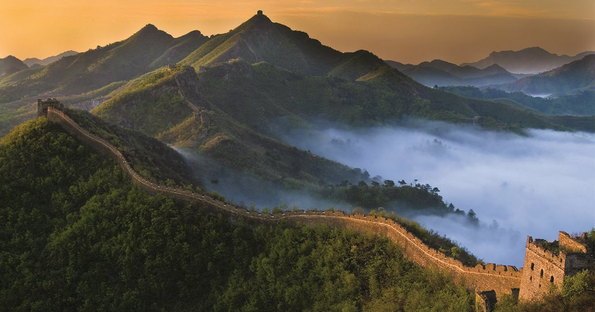
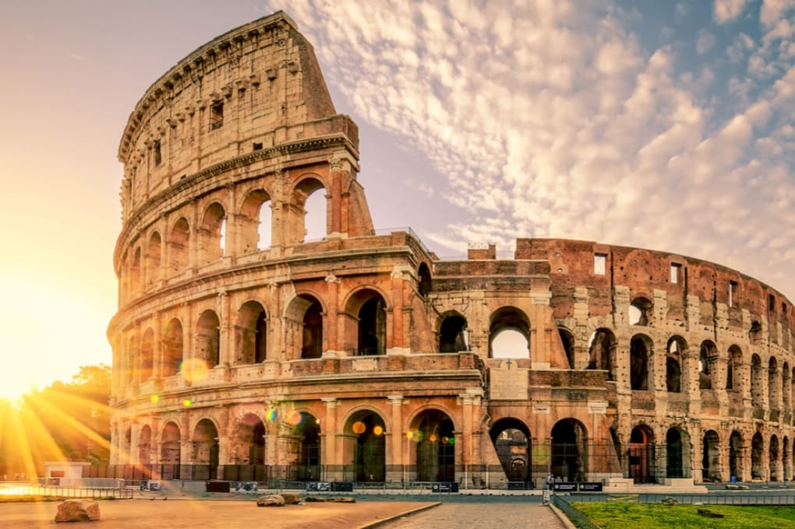
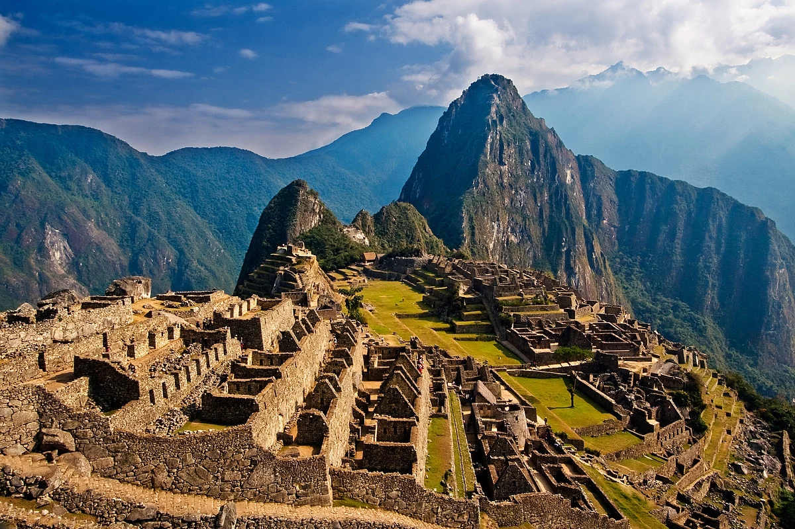
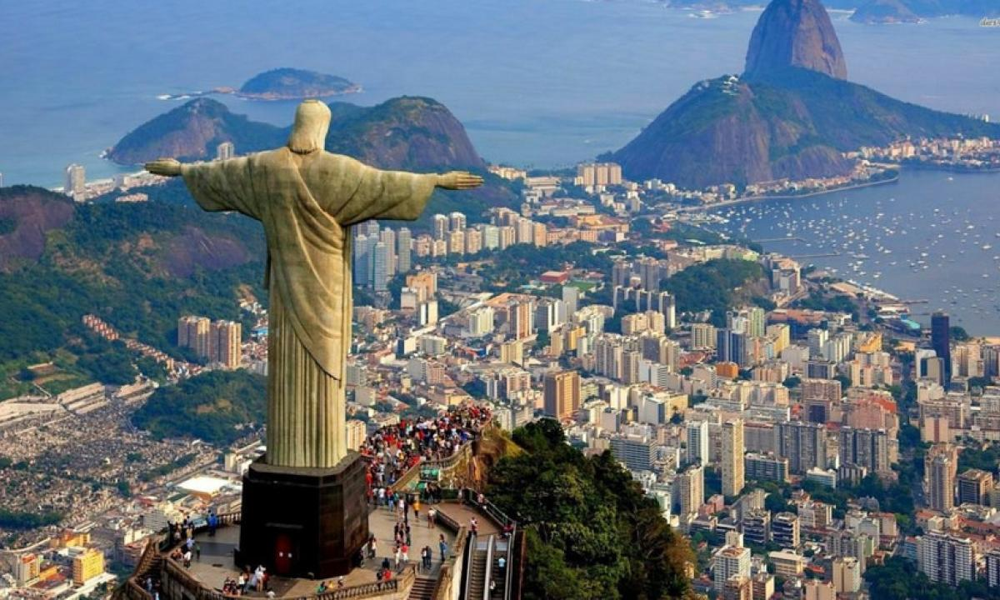
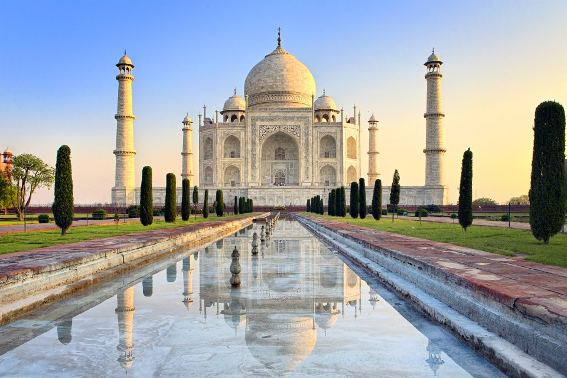
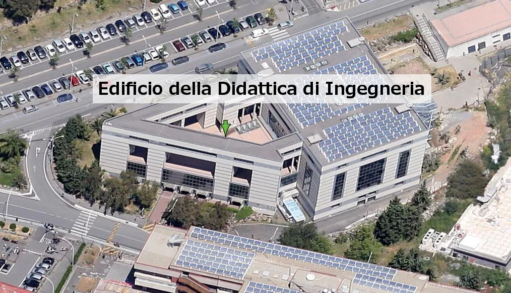

1.
PETRA
GIORDANIA
posto a circa 250 km a sud della capitale Amman, in un bacino tra le montagne a est del Wadi Araba, la grande valle che si estende dal Mar Morto fino al Golfo di Aqaba del Mar Rosso. Il suo nome semitico era Reqem o Raqmu («la Variopinta»), attestato anche nei manoscritti di Qumran. Nacque come una città degli Edomiti e poi divenne capitale dei Nabatei, popolo assai evoluto di guerrieri e commercianti, la cui diramata rete mercantile metteva in comunicazione il sud della Penisola araba con il Mediterraneo. Verso l'VIII secolo Petra fu abbandonata in seguito alla decadenza dei commerci e a catastrofi naturali e, benché le antiche cavità abbiano ospitato famiglie beduine fino ad anni recenti, fu in un certo senso dimenticata fino all'epoca moderna. Il complesso archeologico fu rivelato al mondo occidentale dall'orientalista svizzero Burckhardt nel 1812. Le numerose facciate intagliate nella roccia, riferibili per la massima parte a sepolcri, ne fanno un monumento unico, che è stato dichiarato Patrimonio dell'umanità dall'UNESCO il 6 dicembre 1985. Anche la zona circostante è dal 1993 parco nazionale archeologico.
Nell 2007, inoltre, Petra è stata dichiarata una delle cosiddette sette (8 in realtà) meraviglie del mondo moderno.
2.
LA GRANDE MURAGLIA CINESE
CINA
La Grande Muraglia (長城T, 长城S, ChángchéngP), nata come Wanli changcheng (萬里長城T, 万里长城S, Wànlǐ ChángchéngP, Grande Muraglia di 10.000 Lǐ[1]), consiste in una lunghissima serie di mura situate nell'odierna Cina. Costruita a partire dal 215 a.C. circa per volere dell'imperatore Qin Shi Huang (秦始皇S, Qín Shǐ HuángP, Ch'in Shih-huangW, letteralmente "Primo Imperatore della dinastia Qin") - lo stesso a cui si deve il cosiddetto Esercito di terracotta di Xi'an - la sua lunghezza è stata considerata, fino a poco tempo fa, di 6 350 chilometri con altezze variabili. Dalle misurazioni effettuate nel 2012 con più recenti strumentazioni tecnologiche (raggi infrarossi, GPS), la Grande Muraglia risulterebbe lunga 8 850 km (di cui circa 350 km di trincee e circa 2 250 km di difese naturali), con uno sviluppo complessivo di 21 196 chilometri misurandone tutte le ramificazioni, circa 2 500 in più di quelli stimati.
È stata dichiarata dall'UNESCO patrimonio dell'umanità nel 1987 e inserita nel 2007 fra le sette (8 come abbiamo già detto) meraviglie del mondo moderno.
3.
IL COLOSSEO
ITALIA
Il Colosseo, originariamente conosciuto come Anfiteatro Flavio (in latino: Amphitheatrum Flavium) o semplicemente Amphitheatrum (in italiano: Anfiteatro), situato nel centro della città di Roma, è il più grande anfiteatro romano del mondo. In grado di contenere un numero di spettatori stimato tra 50 000 e 87 000 unità, è il più importante anfiteatro romano, nonché il più imponente monumento dell'antica Roma che sia giunto fino a noi. Inserito nel 1980 nella lista dei Patrimoni dell'umanità dall'UNESCO, assieme a tutto il Centro storico di Roma, le Zone extraterritoriali della Santa Sede in Italia e la Basilica di San Paolo fuori le mura, nel 2007 il complesso, unico monumento europeo, è stato anche inserito fra le Nuove sette meraviglie del mondo, a seguito di un concorso organizzato da New Open World Corporation (NOWC)
è stato anche inserito fra le Nuove sette (ripetiamo insieme : 8) meraviglie del mondo, a seguito di un concorso organizzato da New Open World Corporation (NOWC).
4.
MACHU PICCHU
PERÚ
Il Machu Picchu (pron. [ˈmatʃu ˈpitʃu]), o anche Machu Pikchu ([ˈmɑtʃu ˈpixtʃu]); "montagna vecchia" in quechua: machu, "vecchio"; pikchu, "cima" o "montagna") è un sito archeologico Inca situato in Perù, nella valle dell'Urubamba, a circa 2 430 m s.l.m. Vista nell'immaginario collettivo come i resti di un'antica e fascinosa città perduta, la località è universalmente conosciuta sia per le sue imponenti e originali rovine, sia per l'impressionante vista che si ha sulla sottostante valle dell'Urubamba circa 400 metri più in basso. Fa parte dei patrimoni dell'umanità stilati dall'UNESCO, eletto nel 2007 come una delle sette meraviglie del mondo moderno.
È il terzo sito archeologico più grande del mondo dopo gli scavi di Pompei e Ostia Antica: nel 2003, più di 400 000 persone hanno visitato le rovine e l'UNESCO ha espresso preoccupazione per i danni ambientali che un tale volume di turisti può arrecare al sito.
5.
IL CRISTO REDENTORE
BRASILE
Il Cristo Redentore (in portoghese: Cristo Redentor) è una statua in stile decò rappresentante Gesù Cristo. Collocata sulla cima della montagna Corcovado, ed è alta 38 metri di cui 8 fanno parte del basamento.
La statua, fatta di calcestruzzo e pietra saponaria e costruita fra il 1922 e il 1931, è un simbolo della città e del Brasile e rappresenta il Cristo Redentore dell'umanità, inserita nel 2007 fra le sette (o meglio, 8) meraviglie del mondo moderno. Ai piedi della statua è posta una targa messa dalla comunità italiana nel 1974 (in occasione del centenario della nascita di Guglielmo Marconi) per commemorare l'accensione delle lampade della statua tramite un impulso radio da Roma da parte dello scienziato italiano il 12 ottobre 1931.
6.
CHICHÉN ITZÁ
MESSIICO
Chichén Itzá (/tʃiˈtʃen iˈtsa/) è un importante complesso archeologico maya situato nel Messico, nel nord della penisola dello Yucatán. Le rovine, che si estendono su un'area di 3 km², appartenevano ad una grande città che fu uno dei più importanti centri della regione intorno al periodo epiclassico della civiltà maya, fra il VI e l'XI secolo. Il sito comprende numerosi edifici, rappresentativi di diversi stili architettonici; fra i più celebri si possono indicare la piramide di Kukulkan (nota come El Castillo), l'osservatorio astronomico (il Caracol) e il Tempio dei guerrieri. Il sito di Chichén Itzá è stato dichiarato patrimonio dell'umanità UNESCO nel 1988. Costituisce una proprietà federale dello stato del Messico, ed è amministrato dall'Instituto Nacional de Antropología e Historia (INAH).
È stato inserito nel 2007 (sempre 8) fra le sette meraviglie del mondo moderno.

7.
TAJ MAHAL
INDIA
Il Tāj Maḥal è un mausoleo situato ad Agra, nell'India settentrionale (stato di Uttar Pradesh), costruito nel 1632 dall'imperatore moghul Shāh Jahān in memoria dell'amatissima moglie Arjumand Banu Begum, meglio conosciuta come Mumtāz Maḥal. Nonostante vi siano molti dubbi riguardo al nome dell'architetto che lo progettò, generalmente si tende a considerare Ustad Ahmad Lahauri il padre dell'opera.
Compreso dal 9 dicembre 1983 nella lista dei patrimoni dell'umanità dell'UNESCO e inserito nel 2007 fra le nuove sette (volevo dire 8, è che mi confondo) meraviglie del mondo, è da sempre considerato uno delle più notevoli bellezze dell'architettura musulmana in India.
8.
LA DIDATTICA
CATANIA
L'Edificio della Didattica di Ingegneria di Catania è una delle più grandi costruzione che l'uomo è riuscito a concepire. Si sono impiegati volontariamente i più grandi architetti del mondo, in vista di un possibile spazio tra i nomi dei creatori di tale monumento. Spazio devoluto alla didattica delle più varie materie, come Analisi 1, Analisi 2, Analisi 3 ecc ecc.
Nel 2007 viene inserita, prendendo il primo posto, tra le 8 meraviglie del mondo.
